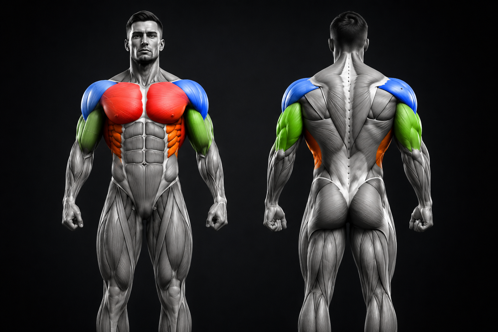
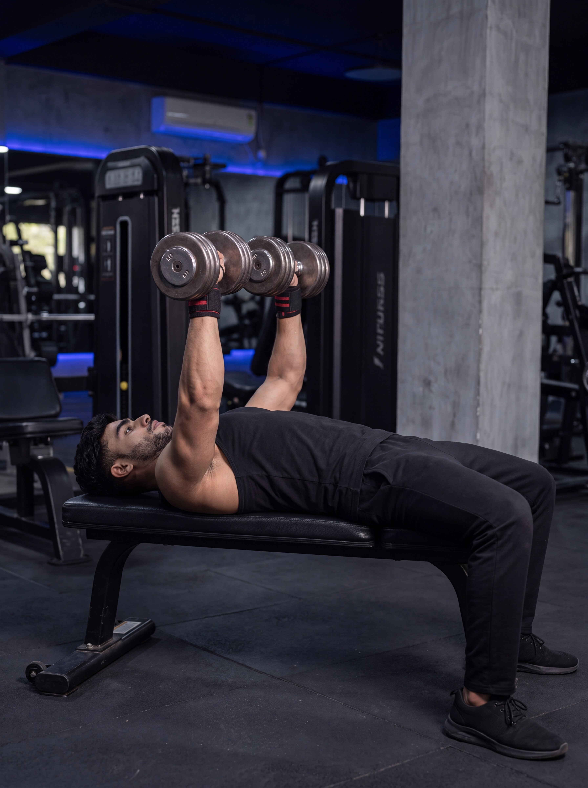

Builds Upper-Body Strength
Strengthens the chest, shoulders, and triceps simultaneously, making it one of the most effective compound exercises for increasing overall pressing strength.
Learn how to perform the bench press with proper technique, discover the muscles it targets, explore its benefits, and avoid common mistakes to maximize strength, muscle growth, and long-term performance.
The bench press is one of the most popular compound strength exercises used to build upper-body muscle and improve overall pressing power. It primarily targets the chest while also engaging the shoulders and triceps, making it a fundamental movement in both bodybuilding and strength training programs.
Whether your goal is to increase muscle size, develop maximum strength, or improve athletic performance, the bench press offers numerous benefits when performed with proper technique. It can be adapted for beginners and advanced lifters alike through different variations, grip widths, and training methods.
In this complete guide, you'll learn the correct bench press technique, muscles worked, key benefits, common mistakes, safety tips, and expert recommendations to help you perform the exercise confidently and effectively.
The bench press is more than just a chest exercise. It develops upper-body strength, improves athletic performance, and serves as a foundational movement for building muscle and increasing overall pushing power.
Strengthens the chest, shoulders, and triceps simultaneously, making it one of the most effective compound exercises for increasing overall pressing strength.
Progressive overload during the bench press stimulates muscle hypertrophy, helping build a stronger and more defined upper body.
Enhances pushing strength used in sports and everyday activities, improving overall athletic performance and movement efficiency.
Learning proper bench press technique improves lifting confidence while reducing the likelihood of common training mistakes and injuries.
The bench press is a compound upper-body exercise that primarily targets the chest while recruiting the shoulders, triceps, and several stabilizing muscles to produce safe and powerful pressing movements.

Follow these simple steps to perform the bench press with proper form, maximize muscle activation, and reduce the risk of injury.

Lie flat on the bench with your eyes directly beneath the barbell. Keep your feet firmly planted on the floor, engage your core, and maintain a natural arch in your lower back.
Hold the bar slightly wider than shoulder-width with a full grip. Keep your wrists straight and squeeze the bar tightly to improve stability throughout the lift.
Lift the bar off the rack and position it above your chest. Slowly lower it toward your mid-chest while keeping your elbows at approximately a 45-degree angle.
Push the bar upward in a controlled motion by driving through your chest, shoulders, and triceps until your arms are nearly straight.
Fully extend your arms without aggressively locking your elbows. Maintain control of the bar and keep your shoulder blades retracted.
Continue performing smooth, controlled repetitions while maintaining proper breathing, posture, and consistent lifting technique from start to finish.
Even experienced lifters can develop poor Bench Press habits that reduce performance and increase injury risk. Learn the most common mistakes and how to correct them for safer, stronger, and more effective training.
Flaring your elbows excessively places unnecessary stress on the shoulder joints and reduces efficient chest activation during the press.
Keep your elbows at roughly a 45-degree angle from your torso throughout the movement for better control and shoulder safety.
Using momentum by bouncing the bar reduces muscle engagement and greatly increases stress on the chest and shoulders.
Lower the bar under control, briefly pause near the chest if needed, then press upward with full control.
Performing only partial repetitions limits muscle development and reduces overall strength gains over time.
Lower the bar until it reaches the middle of your chest, then press until your arms are fully extended without locking aggressively.
Unstable foot placement reduces balance, weakens force production, and makes the lift less efficient.
Keep both feet firmly planted throughout the exercise to create a stable base and improve overall pressing power.
Choosing more weight than you can control often leads to poor technique, incomplete repetitions, and a higher risk of injury.
Select a weight that allows you to maintain proper form for every repetition before increasing the load.
Once you've mastered the standard Bench Press, explore these effective variations to target your muscles from different angles, overcome plateaus, and keep your workouts challenging.

Targets the upper chest more effectively while also engaging the shoulders and triceps for balanced chest development.
Learn More
Improves muscle balance and stability while allowing a greater range of motion than the traditional barbell bench press.
Learn More
A bodyweight pressing exercise that emphasizes the lower chest while also strengthening the triceps and front shoulders.
Learn MoreSmall technique adjustments can make a big difference in strength, safety, and muscle activation. Follow these coaching tips to improve every Bench Press workout.
Find quick answers to the most common questions about the Bench Press, including technique, frequency, safety, and muscle development.
Yes. Beginners can safely perform the Bench Press after learning proper technique with manageable weight. Focus on proper form before increasing the load.
Most lifters benefit from performing the Bench Press one to three times each week, depending on their experience, recovery, and overall training program.
The Bench Press primarily targets the chest while also training the front shoulders, triceps, and stabilizing muscles throughout the upper body.
Yes. Lower the bar under control until it lightly touches the middle chest without bouncing before pressing it back up.
The Bench Press is one of the best chest-building exercises, but combining it with incline presses, chest fly variations, and dips provides more complete chest development.
Every workout is an opportunity to become stronger, healthier, and more confident. Explore more exercises to build a balanced training program, or visit our Learn section to master the fundamentals of fitness, nutrition, and exercise technique.